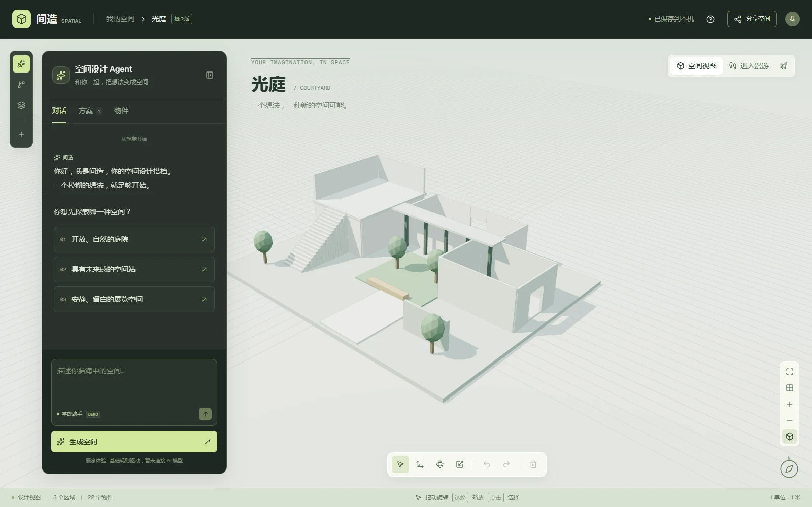
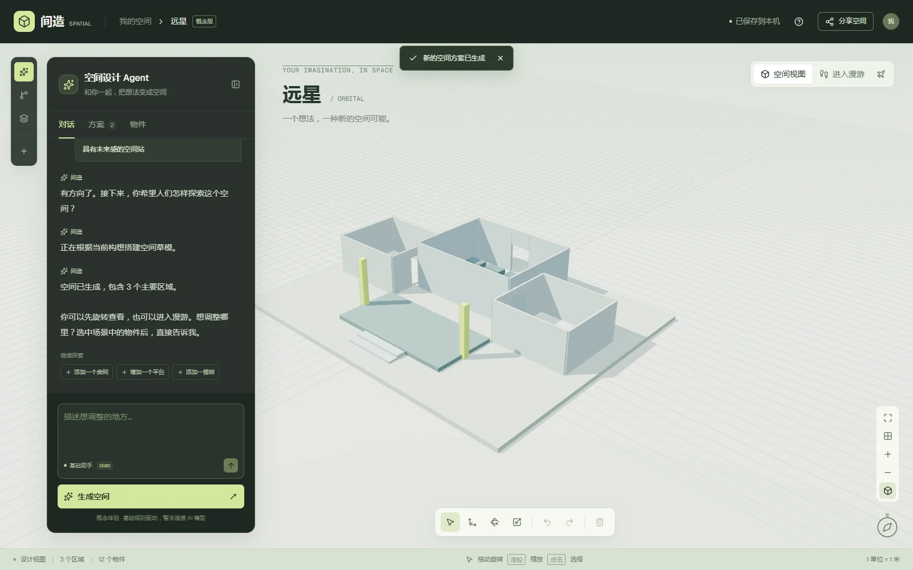
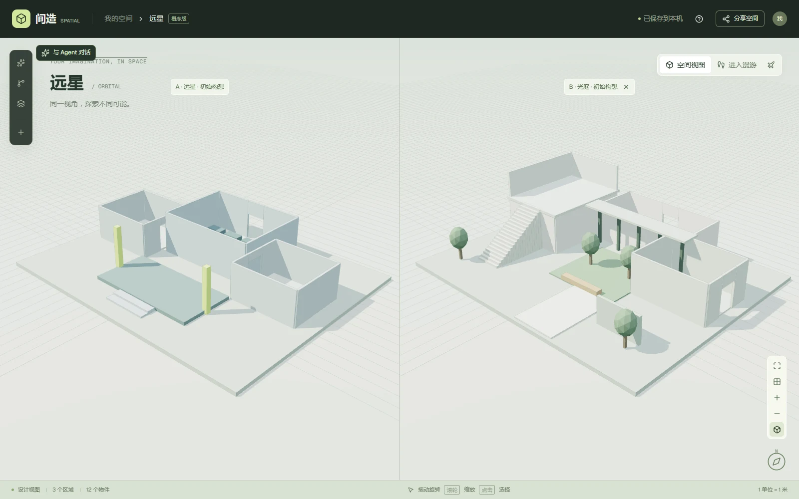

让 AI 先帮助我澄清问题
我要求采用苏格拉底式提问，每次一个问题并给出编号选项，将开放的想法收敛为问题陈述、方案描述、技术约束、明确不做的事和成功标准。
形成的产出五部分 SPEC
把模糊意图转成可以讨论、执行和检查的需求。
自主探索 / AI × 空间设计 / 2026
把空间想法，
推进为可以体验的产品。
从一句“我想做一个空间设计 Agent”出发，
我与 Codex 协作，把需求、交互与空间表达连接成一个公开网站。

项目初心
作为空间设计者，我关心的不只是最后一张效果图，更是想法如何被表达、讨论与调整。前期构思往往还很模糊，但要把它变成可感知的空间，已经需要跨越平面、模型和展示工具。
因此，我提出一个探索方向：让设计者先用对话描述意图，再进入一个可以浏览和调整的空间。适用方向可以从庭院、展览延伸到游戏中的虚拟场景。
我没有把“支持任意空间”直接当作首版承诺，而是先选择三个可控场景，验证对话、构建、浏览和修改能否连成一条清晰的体验路径。
用一个能够实际操作的网站，验证空间设计 Agent 的交互逻辑，并建立后续接入模型的基础。
一次决定产品方向的澄清
“这个是一个 Agent，
沙盒是他的风格，
载体是网站。”
我在需求沟通中明确了三者的关系：Agent 承担引导，沙盒帮助理解空间，网站让作品可以被直接体验。这个判断决定了界面以对话为入口，而不是先让使用者学习复杂的编辑工具。
产品体验
把空间构思组织成连续的操作，让每一步都有可以看见的反馈。下列画面均来自已上线的网站。
通过逐题选项或文字描述，选择空间类型、探索方式与层次需求。
基于庭院、空间站或展览模板搭建草模，旋转浏览，或切换漫游视角。
尝试“添加一个房间”等基础指令，也可选中物件调整位置与尺寸。
修改保留原方案，通过并排视图比较，再用只读链接分享当前快照。

让设计保留选择
基础指令的修改会创建新方案，手动编辑也保留版本与撤销入口。我把“可以比较和返回”纳入产品要求，让探索过程不必只保留最后一个答案。
分享链接包含当前场景的只读快照；本机草稿与公开展示各有明确的用途。

Agent 框架
我用 Agent 的交互思路组织原型。当前以规则与模板验证流程，未来再引入模型理解与工具调用。两者的边界在架构中明确标出。
描述空间方向
确定选中对象
Studio UI匹配支持的基础指令
创建或修改场景
createScene / modifyScene校验参数与对象标识
记录方案与父版本
SpaceScene / validateScene场景渲染与漫游
方案比较与修改反馈
Three.js / Viewport使用者查看结果，再提出下一次调整。手动编辑与对话修改共同作用于场景状态；草稿写入本机，快照通过链接或 JSON 文件分享。
每个物件记录类型、位置、尺寸、旋转和可见性；方案记录对象集合与父版本关系。界面与渲染读取同一份状态，使调整结果可以保存、校验和回看。
当前不会把任意文字当作可执行代码。基础指令通过既定规则转换为场景操作；不支持的修改会给出提示。参数校验限制异常尺寸、重复标识等输入。
与 Codex 的协作
这个项目中的 AI 应用，首先发生在开发过程。我的工作是定义要解决的问题、给出约束、判断结果并持续纠偏；Codex 协助完成文档、代码、检查与发布。
我要求采用苏格拉底式提问，每次一个问题并给出编号选项，将开放的想法收敛为问题陈述、方案描述、技术约束、明确不做的事和成功标准。
把模糊意图转成可以讨论、执行和检查的需求。
我明确“Agent 是核心、沙盒是风格、网站是载体”，并强调看起来像游戏，实际操作仍围绕设计。Codex 据此把对话引导、三维视图与辅助编辑组织在同一界面。
界面的视觉语言与真正的使用方式保持一致。
在暂时没有模型 API 的情况下，我选择先完成可交互概念版。Codex 用预设规则实现对话与场景操作，优先交付能生成、能修改、能比较的体验路径。
先验证产品流程，并在界面中说明能力边界。
在协作开发中，Codex 完成类型检查和场景逻辑测试，覆盖模板合法性、定向修改、异常数据、门洞通行与楼梯高度等关键条件。案例配图再从真实网站操作中取得。
用具体检查支撑交付，不将它等同于完整的用户测试。
原托管地址设为公开后，我仍遇到访问拦截，并提供截图反馈。我提出参考个人作品集的发布方式，推动 Codex 将原型独立发布到 GitHub Pages，继续检查匿名访问和资源加载。
以真实使用反馈推动修正，完成从本机到线上展示的交付。
我负责问题提出、产品定义、交互方向、范围取舍与体验反馈；Codex 协助完成需求文档、代码实现、调试、验证和发布操作。这是一项 AI 协作开发实践，不将 AI 生成的代码包装为全部手写，也不将概念原型表述为已完成的大模型产品。
成果与复盘
这个项目的价值，在于把空间设计经验转成产品问题，再通过 AI 协作，把它推进到可以被别人打开、操作和讨论的程度。
庭院、空间站、展览空间，为概念交互提供明确的验证范围。
房间、墙体、地面、楼梯、平台、方块、立柱与绿植，组成可编辑草模。
覆盖核心场景逻辑与输入边界，为进一步扩展建立基础。
当前尚未开展系统性的用户研究或效率对比测试，因此不声称已经证明设计效率提升。后续应先观察使用者能否独立完成一次“生成—修改—分享”，再评估模型接入是否带来实际价值。
接入模型后，还需验证指令理解、工具选择、执行失败恢复与数据存储方案。专业 CAD/BIM 输出、建筑合规验证和游戏引擎资产交付，均超出本次概念验证范围。
项目经历
当前为预设规则驱动的交互原型，尚未接入真实大模型；代码实现与检查由 Codex 协助完成。
让作品自己说话